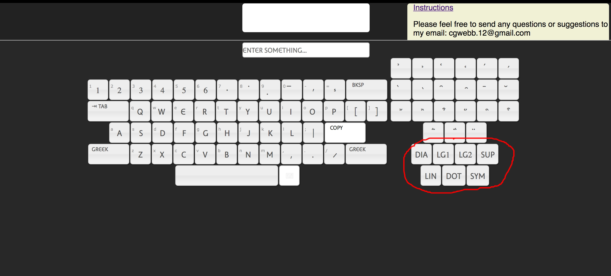

When you first open the Athena Ruby Keyboard webpage this is what you will see:

Clicking into the input area will open up the virtual keyboard:

Here is what the keybooard looks like before you press any buttons:

All of the letter keys on the initial keyboard can be manipulated with your physical keyboard. The three keys on the initial keyboard that cannot be manipulated by your physical keyboard are the extender and the two buttons to switch language layouts. Also, the "tab" key will respond to your physical keyboard, but it should have no effect on the input. It is simply there as a placeholder to make it easier to relate the keys on your physical keyboard to the keys on the virtual keyboard.
To switch between Latin and Greek simply click on either of the buttons that have 'Greek' or 'Latin' on them. Like this:

To access the different forms of each character all you have to do is
hold down that key on your physical keyboard or click it and hold until a popup
appears.
In this example I first hold down the 'a' key on my physical keyboard
until I see all the variant forms of the Latin 'a', then I switch languages
and hold the same 'a' key until I see a popup with all the variant forms of alpha:

To open the keyboard extenders simply click the extender button:

There are seven extenders on the Athena Ruby keyboard: DIA = diacritics, LG1 = Greek ligatures, LG2 = Latin ligatures, SUP = Superscripts, LIN = Symbols made of lines, DOT = Symbols made of dots, SYM = All other symbols.
Here is an example of someone using the extenders:

The Diacritics extender has it's own set of alternate key popups so all you have to do is hold down one of the diacritics to see all possible combinations with vowels.

The virtual keyboard remaps the enter button on your physical keyboard so that when you press enter, the contents of input are copied to your keyboard. Also, every time you copy the input those same characters will appear inside of the "History" section.

You can click on any of the things you have saved to history and they will automatically populate the input area, so that it should be easier to make minor adjustments.